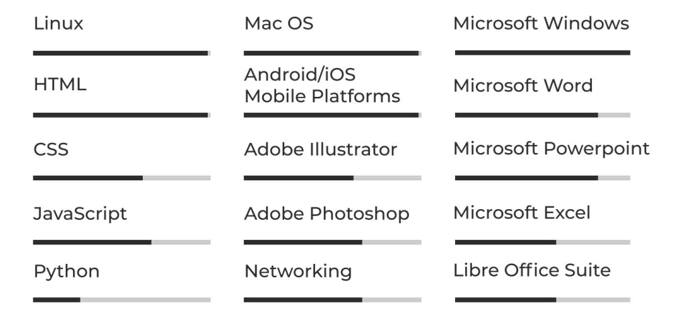

LAEL LAATE
About Me
An Aspiring Full-Stack Developer who is a highly motivated and technically
inclined individual, detail-oriented and a team player with strong
communication skills (both oral and written) and proven leadership skills;
possessing computer skills with great analytical and problem-solving
aptitude, empathy, and customer service skills to provide best-in-class
service to Clients.
Education
Work Experience
-
IT Technician/Pianist
Calvary Charismatic Centre
2019 - Present
Responsibilities
- Manage Software Systems.
- Manage local network and internet systems.
- Perform and oversee routine database backups.
-
General OS, Network Connectivity, and Hardware troubleshooting and
resolution.
- Playing the piano at every church function.
-
Administrative Assistant/IT Support Personnel
Centre For Business Development (Kumasi Business Incubator)
2018 - 2019
Responsibilities
-
Assisting in administrative facilitation and organisation of the
African German Entrepreneurship Academy (AGEA) in Kumasi.
-
Aiding international participants of AGEA in research and conducting
experiments in the locality.
- Assist in local network and internet systems' management.
-
User Policy, General OS, Network Connectivity, and Hardware
troubleshooting and resolution.
-
Head of Production (Computer Systems/Audio-Visual/Music) -
Volunteer
Salt City Ministry (Calvary Charismatic Centre - Youth Church)
2015 - 2017
Responsibilities
-
Team Lead responsible for Coordinating Video Projection,
Videography, Photography, Graphic Design, Stage Design & Management
and Music Teams during every event.
-
Responsible for reviewing flyer and graphic designs and video edit
quality, style and tone.
-
Responsible for sparking creativity of audio-visual team to
continually push fresh content and ideas.
-
Responsible for reviewing stage performances and general stage
setups and redesigns.
-
Ensuring consistency in design cues and intent behind content
produced by audio and video, event, and music teams while fostering
creativity.
-
Freelance IT Consultant
2009 - Present
Services Rendered
-
Managed Computer Software Systems for SOS Children's Village -
Kumasi
-
Installed network-shared peripherals in the form of printers and
photocopiers for Ghana Water Company, Asokore-Mampong District
Office.
-
Perform routine maintenance and updates of computers at iVinery
Studios and iVinery School of Music
-
General OS troubleshooting, maintenace and updates of many
individual clients' private desktop PCs and laptops.
Software Skills

Contact
 My GitHub
My GitHub
 My LinkedIn
My LinkedIn
 Find me on X (or Twitter 😂)
Find me on X (or Twitter 😂)